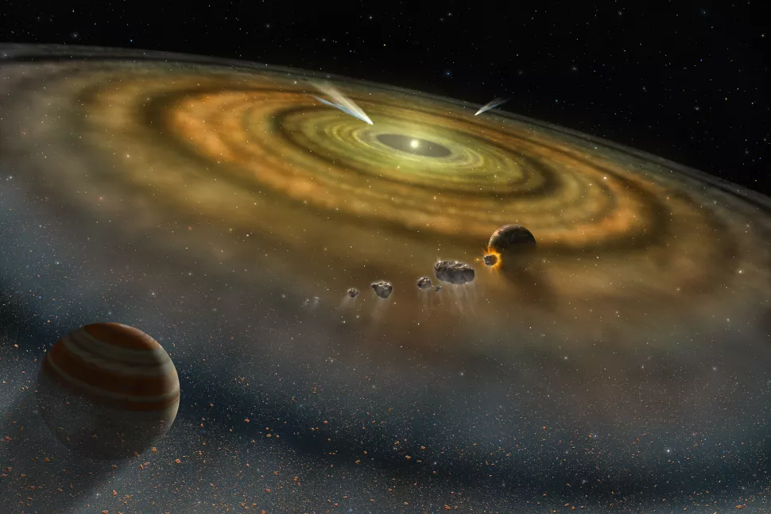

The image of Earth in space like a blue marble highlights the planet's fragility and the beauty of Earth (Image credit: NASA)
Earth, our home, is the third planet from the sun. While scientists continue to hunt for clues of life beyond Earth, our home planet remains the only place in the universe where we've ever identified living organisms.
Earth is the fifth-largest planet in the solar system. It's smaller than the four gas giants — Jupiter, Saturn, Uranus and Neptune — but larger than the three other rocky planets, Mercury, Mars and Venus.
Earth has a diameter of roughly 8,000 miles (13,000 kilometers) and is mostly round because gravity generally pulls matter into a ball. But the spin of our home planet causes it to be squashed at its poles and swollen at the equator, making the true shape of the Earth an "oblate spheroid."
Related: How big is Earth?
Our planet is unique for many reasons, but its available water and oxygen are two defining features. Water covers roughly 71% of Earth's surface, with most of that water located in our planet's oceans. About a fifth of Earth's atmosphere consists of oxygen, produced by plants.
Related: 15 places on Earth that look exoplanetary
PLANET EARTH'S ORBIT AROUND THE SUN
While Earth orbits the sun, the planet is simultaneously spinning around an imaginary line called an axis that runs through the core, from the North Pole to the South Pole. It takes Earth 23.934 hours to complete a rotation on its axis and 365.26 days to complete an orbit around the sun — our days and years on Earth are defined by these gyrations.
Earth's axis of rotation is tilted in relation to the ecliptic plane, an imaginary surface through the planet's orbit around the sun. This means the Northern and Southern hemispheres will sometimes point toward or away from the sun depending on the time of year, and this changes the amount of light the hemispheres receive, resulting in the changing seasons.
Earth happens to orbit the sun within the so-called "Goldilocks zone," where temperatures are just right to maintain liquid water on our planet's surface. Earth's orbit is not a perfect circle, but rather a slightly oval-shaped ellipse, similar to the orbits of all the other planets in our solar system. Our planet is a bit closer to the sun in early January and farther away in July, although this proximity has a much smaller effect on the temperatures we experience on the planet's surface than does the tilt of Earth's axis.
Statistics about Earth's orbit, according to NASA:
- Average distance from the sun: 92,956,050 miles (149,598,262 km)
- Perihelion (closest approach to the sun): 91,402,640 miles (147,098,291 km)
- Aphelion (farthest distance from the sun): 94,509,460 miles (152,098,233 km)
- Length of solar day (single rotation on its axis): 23.934 hours
- Length of year (single revolution around the sun): 365.26 days
- Equatorial inclination to orbit: 23.4393 degrees
EARTH'S FORMATION AND DEVELOPMENT
Scientists think Earth was formed at roughly the same time as the sun and other planets some 4.6 billion years ago when the solar system coalesced from a giant, rotating cloud of gas and dust known as the solar nebula. As the nebula collapsed under the force of its own gravity, it spun faster and flattened into a disk. Most of the material in that disk was then pulled toward the center to form the sun.
Other particles within the disk collided and stuck together to form ever-larger bodies, including Earth. Scientists think Earth started off as a waterless mass of rock.
"It was thought that because of these asteroids and comets flying around colliding with Earth, conditions on early Earth may have been hellish," Simone Marchi, a planetary scientist at the Southwest Research Institute in Boulder, Colorado, previously told Space.com.
However, analyses of minerals trapped within ancient microscopic crystals suggest that there was liquid water already present on Earth during its first 500 million years, Marchi said.
